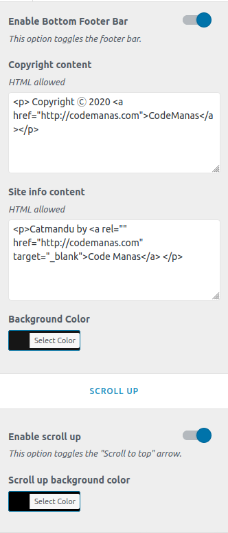

To work on this option, go to Catmandu Pro -> Theme Customizer
Footer options manage the footer section of the site.

Footer Widgets
Widgets should be active on the footer widget area for these options to work
- Widget Layout Columns - Choose the layout of columns, wheather to show
none or 1 or 2 or 3 or 4 columns - Widget area background Color
- Foote widget heading color - Choose color for the footer widget title
Footer Menus
- Enable footer menu Footer menu should be assigned for this to work
- Footer menu position
- Enable social links
- Social links - Just input your social media links and icon will be assigned automatically.
- Background color
Last Footer Bar & Scroll Up
- Enable Bottom Footer Bar
- Copyright content
- Site info content
- Background Color
- Enable scroll up
- Scroll up background color
